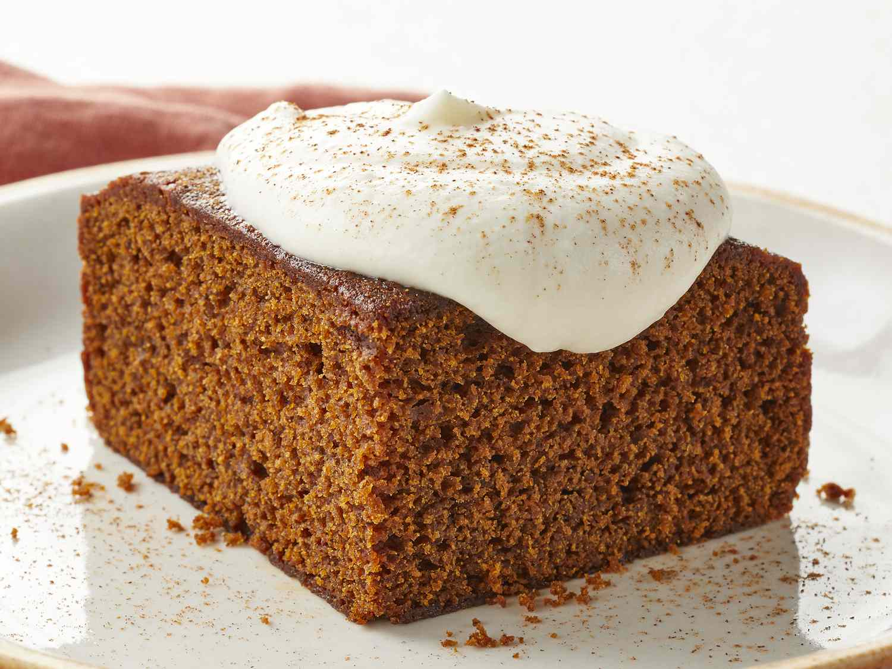

Old-Fashioned Gingerbread
Old-Fashioned Gingerbread

Description
Ever since I was a kid my parents every christmas would make gingerbread in a big loaf for the christmas time and it was the Best.
The rich ginger flavour is one of my favourites and the denseness of this cake bread hybrid really bring it to the forefront of this dish.
Brings a real warm and cozy feeling both from the memories and that cosy ginger taste. Onto the recipe!
Ingredients
- 50 g butter
- 1 tablespoon golden syrup
- 1 egg
- ½ cup brown sugar
- 1 cup plain flour
- 1 teaspoon baking powder
- 2 teaspoons ginger powder
- 1 teaspoon mixed spice
- 1 teaspoon baking soda
- ¾ cup milk
Steps
- Preheat oven to 180°C
- Line a loaf tin with baking paper.
- In a medium saucepan, gently melt the butter and golden syrup together.
- In a mixer cream together egg, and sugar - mix well.
- Add the melted syrup mixture.
- Sift and mix in all other ingredients except the baking soda and milk.
- Mix the baking soda with the milk then gradually stir this into the mix. The mixture will be quite runny.
- Pour into loaf tin and cook for about 35 mins or until ready when tested with skewer.
Back to Homepage